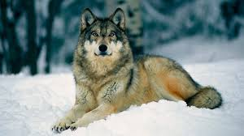

Los lobos son animales salvajes que viven en manadas y se alimentan de otros animales. Son animales carnívoros y cazadores, por lo que suelen cazar en grupo para poder cazar animales más grandes. Los lobos son animales muy inteligentes y astutos, por lo que suelen cazar en grupo para poder cazar animales más grandes. Los lobos son animales muy inteligentes y astutos, por lo que suelen cazar en grupo para poder cazar animales más grandes.
Los lobos viven en manadas organizadas jerárquicamente, lideradas por un macho y una hembra alfa.
Son depredadores estratégicos que cazan en grupo para derribar presas más grandes.
Utilizan aullidos, expresiones faciales y posturas corporales para comunicarse entre ellos.